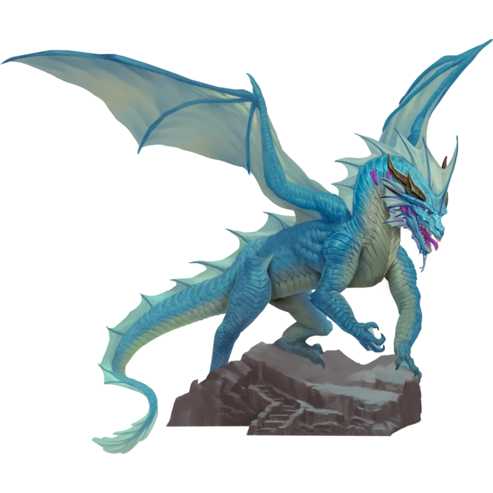

各年龄段数据卡
盐水龙是起源于水元素位面、注重秩序与等级制度的巨龙――当然，它们坚信自己与盐水龙同胞理应在自然秩序中高居顶端。 盐水龙的体色多呈海洋色调，通常为蓝绿色，鳞片如盐晶般熠熠生辉；身上的鳍冠既能如鱼鳍般助其在水中滑行，也能助其翱翔天际、破浪畅游，颈部周围还生有宽阔的颈褶。对盐水龙而言，没有什么比通过建立一套符合自身逻辑的强制秩序来厘清这个世界更重要了，而且它们十分乐意用强硬激烈的辩论乃至武力来贯彻自己的主张。这并不意味着它们天生怀有主动的恶意，但如果你想避免正面冲突，最好还是对盐水龙做出默许或妥协。 许多盐水龙认为，将自身意志强加于周遭这一天性的自然归宿，便是建立一个按照它们心目中最佳方式运转的社群或袖珍国度。在盐水龙的统辖下，这些聚居地往往极其稳定而井然有序――尽管即便历经数十年乃至数百年岁月变迁，也难免显得有些僵化刻板、一成不变。自然，这些聚居地的居民并非其他盐水龙，因为其他盐水龙宁可各自建立属于自己的社群，也不愿屈居同胞之下。根据聚居地位于水元素位面还是主物质位面，其中的居民可能是生活在海岸上的人类与其他陆生生物，也可能是生活在水下的人鱼与其他水生生物。 远古元素生灵原初龙既是巨龙，也同样是位面生物与元素生灵；它们诞生于宇宙边界之外的元素界域与暗影国度。传言道，凡世间最伟大的原初龙古老而强大到甚至早在世界创生之前便已存在。倘若传言属实，那么它们的影响力打从世界诞生之初便一直在塑造着这片天地。 选择定居在盐水龙聚居地中的人们，大多愿意忍受那令人窒息的严苛秩序与规章，以此换取安稳的生活，以及免受其他危险生物和邻国侵害的庇护。没有什么比治下聚居地遭受威胁更能促使盐水龙迅速出击了；从这个意义上说，只要臣民能够接受当地的律法，往往会觉得这条巨龙是一位令人安心的守护者。 大多数盐水龙并不会严格居住在聚居地内部，而是在城外近处开辟巢穴，以便在需要独处时退回其中。它们常常动用聚居地征收的赋税，用最考究的陈设装点自己的巢穴。 盐渍酸腌盐水龙富有耐心、崇尚逻辑，绝不轻易受一时激情或冲动左右。因此，它们常常花时间将食物浸入浓盐水、食醋或二者混合的卤汁中腌渍起来，既便于长期保存留待日后享用，也能根据个人口味调整风味。绝大多数其他生物都会觉得盐水龙的口味咸得实在难以下咽。甚至对盐水龙自身而言，这也可能构成隐患――因为过量摄入盐分同样会对它们的长期健康造成不容小觑的风险。 太古盐水龙盐水龙痴迷于建立井然有序的聚居地，而其中极少数能够存活并繁荣至太古龙阶段的个体，往往都与世上最负盛名、最繁荣兴盛的海上社群息息相关。 海岛大都会、绵延辽阔的沿海城邦，乃至更多海上政权，都仰仗于一位强大的太古盐水龙庇护者而存在。稳定有利于贸易发展，哪怕是野心勃勃的扩张主义帝国，在企图吞并一位实力堪比至强英雄的存在所统辖的领土前，通常也得三思而行……更何况这条巨龙还是高瞻远瞩的谋划大师，能够轻而易举地联合周遭邻邦共同对抗侵略者，绝不会孤军奋战打一场两败俱伤的防御战，最终倒在大国压倒性的兵力优势之下。 海滨巢穴盐水龙倾向于在海岸洞窟中筑巢；在凡世间，这类巢穴往往横跨陆地与海洋的交界线，而在水元素位面则是完全没于水下的海底洞穴。通过将巢穴与自己统治的聚居地适度隔开，盐水龙便拥有了一处远离尘嚣的清静之所――每当各路官僚、政客或利益集团吵嚷得令人烦不胜烦，盐水龙只想静静放松片刻时，便可退回这处避风港。 虽然太古盐水龙与年轻同族一样偏爱居住在紧邻城市边界外的大型海蚀洞或岩窟中，但随着岁月推移，它们有时会遇上一道后勤难题：市政区划权。为了在最初让巢穴离聚居地足够近，盐水龙不可避免地要在数百年间直面城市不断扩张的冲击――如果这座城市比高傲的盐水龙预想中还要受欢迎，情况更是如此。于是终有一天，聚居地的发展需求会自然而然地推动城区向巨龙巢穴的方向蔓延，甚至可能一路扩张到太古龙自家的门槛前。 既然太古盐水龙身为聚居地的统治者，它们自然有不少手段来防止这种情况发生。例如，只要它们愿意，大可以直接修改市政区划法令，禁止在距离其巢穴一定范围内兴建任何建筑。但即便如此，城市仍可能在法定禁建距离之外绕着巢穴呈环泡状继续扩张。这种受控扩张的最终结果，依然不可避免地会把巨龙的巢穴包围成城市内部的一块飞地，宛如寻常类人君主王宫中的禁苑。这固然仍能为巨龙保留相当程度的隐私，并在法律条文上维持巢穴“位于城市边界之外”的名义，但要想声称巨龙巢穴在任何实质意义上仍独立于城市之外，就未免有些牵强了。 赋税与朝贡盐水龙是极少数完全通过凡人熟知的合法途径（例如向治下聚居地征税，以及接受其他统治者或国度的朝贡）来充实宝库的巨龙之一。正因如此，盐水龙通常会在国家预算中专门为自己的宝库单列一个支出科目；这意味着它们能够提前规划宝库的资产价值，甚至雇佣商人定向采购心仪的特定藏品。相较于那些靠劫掠敛财或从败亡屠龙者身上搜刮战利品的巨龙，盐水龙的宝库因此要井井有条得多，绝不显得杂乱无章。 另一种选择是随着城市扩张而将巢穴迁往更远的地方；但如果旧巢穴里布设有大量陷阱、防护结界、艺术陈设与建筑结构需要在新址重建，这往往要耗费高昂的代价――更不必说倘若不得不多次迁巢了。 更为专横的盐水龙则会用严苛的界线划定禁区，规定城中任何建筑都不得越过某条指定分界线（无论距离巢穴实际有多远），以此确保城市最终不会从四面八方包围自己的巢穴。然而，倘若城市因此被迫无视地形、资源与政治边界而一味向反方向畸形扩张，这一举措就可能适得其反。虽然盐水龙治下的臣民多半会恪守它的法令，但敌对势力乃至战略宿敌却可能趁虚而入，宣称占据巨龙巢穴另一侧的荒置土地，从而在未来的某一天埋下与这位强大太古龙爆发冲突的导火索。 无论如何，所有太古盐水龙都有一个共同点：凭借精明的政治手腕、纯粹的肉体与魔法伟力，外加数百上千年的岁月积淀，它们在世界舞台上都举足轻重。因此，凡是通晓地缘政治的人，往往对本地区每一位太古盐水龙的名号都如数家珍。 盐水龙的偏执癖好盐水龙极其固执己见，对于何为“有序”与“正确”有着一套独树一帜的标准。因此，它们有时会养成一些不同寻常的偏执或癖好。作为治下聚居地无可争议的统治者，它们往往有机会将这些个人执念直接写入法典。正因如此，在盐水龙统治的城市里，法典上有时会赫然列着一些稀奇古怪、令人意想不到的律法条文！ |
 盐水龙 |